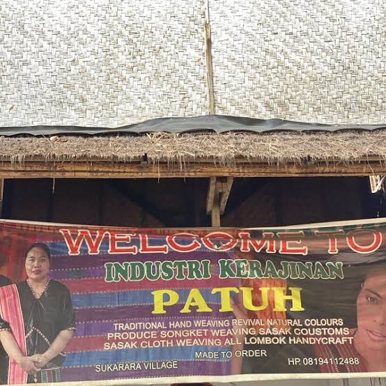

Discover your place
Explore The
Best Beautiful
Beaches
Explore
5 best places to visit
More
SUKARARA VILLAGE
Welcome to Big Smile Tour
Apart from having a variety of beautiful natural attractions, Lombok Island is also famous for its weaving crafts. Lombok Sukarara Village Tourism is a weaving tourism village on the island of Lombok.
This village is located in Jonggat District, Central Lombok Regency, Lombok. This location is also close to Kuta Beach, Tanjung Aan, Sade Village and Penujak Village. If you visit this village, you will find many women who are proficient in making Lombok weaving crafts.

The Uniqueness of Typical Weaving of Sukarara Village Lombok
Women Weaving
Sukarara Lombok Village Tour is a village that produces songket weaving handicrafts typical of Lombok Island which is very famous.
Some of the uniqueness of Sukarara Village and its handicrafts make this place a must visit when you are on the island of Lombok. Those uniqueness include:
Songket weaving is a woven cloth made by adding weft threads with synthetic thread as decoration, usually gold or silver in color. the decoration is inserted between the warp threads. Sometimes these decorations took the form of beads, shells or even coins.
The yarns used in weaving are selected yarns that the strength has been proved.
Moreover, the woven fabrics typical of Sukarara Village do not fade easily because the dyes used are made from natural ingredients taken from the plants.
In the manufacturing process, this songket woven cloth requires considerable care, it takes one week to one month for the weaver to finish one songket cotton cloth.
The songket woven cloth typical of Sukarara Village has become part of Lombok commodity which is well known in foreign markets.
The songket motifs offered by Sukarara Village are very diverse. For example, the flower eight motif, the chicken motif, the gecko motif (a symbol of prosperous), the four flower motif, the horizontal pakerot motif, the violet trudak motif and many more. Each motif that is made has its own meaning.
In addition to producing songket woven cloth, the people of Sukarara Village also produce ikat weaving. The material of the ikat fabric is cotton, and the processing time is also not too long. For 3 meters of ikat weaving only takes 3 day.
The woven fabrics produced by the weavers in Sukarara Village are mainly made at home (home industries). Almost every house in this village has its own loom. The weaver profession is only cultivated by the women, while the men mostly work as farmers.
Another unique thing that this village has is a tradition that has been passed down from generation to generation. In this village, almost all women can do weaving and do not want to work outside their area. This is due to a tradition that requires the women of Sukarara Village to be skilled in weaving, if they have not mastered how to weave then they are not allowed to marry. So they will be allowed to get married if they are proficient and good at weaving. Moreover, women who get married in this village are required to use songket because songket is considered a symbol of the longevity of a relationship.
The Sukarara Village offers a million charm which of course you should enjoy. If you have time while vacationing in Lombok Island, you must visit this place and your vacation in Lombok won’t be disappointed.
Let's Go Explore Sukarara Village
Subscribe Our
Newsletter
Subscribe to our newsletter and get a
special 30% discount.